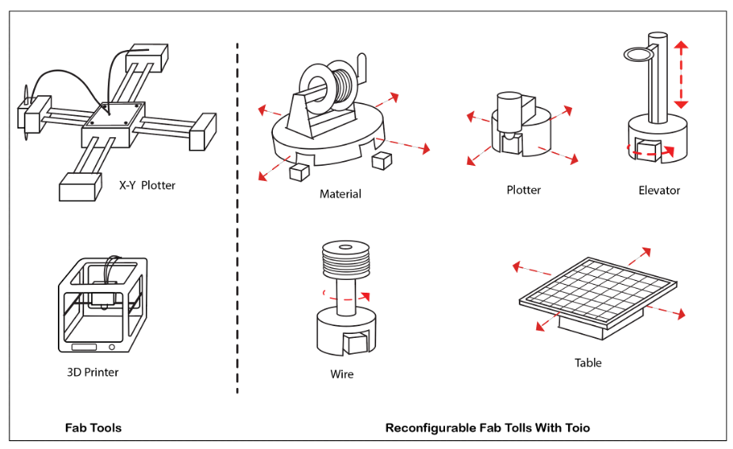
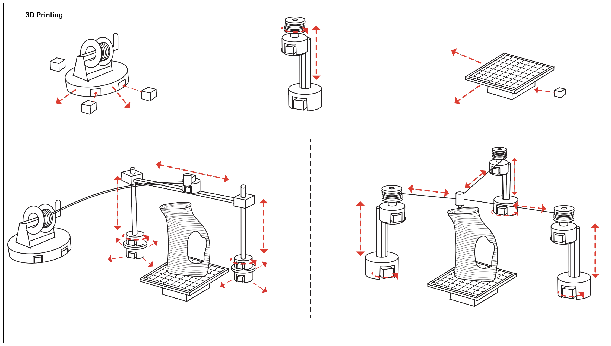

Samin Farajian, Hiroki Kaimoto, Ryo Suzuki
Download the PDFToday’s digital fabrication machines are not very flexible. For example, the users cannot easily bring 3D printers with them and print an object wherever they want. In addition, the size and functionality is mostly static—it is often difficult to change the size of printers or modify it from 3D printers to laser cutters.
The current limitations of these fabrication machines stem from the fixed and inflexible form factors of these devices—the users cannot easily construct or decompose each element of the machines such as motors, extruders,and gears. Therefore, the current fabrication machines are limited in portability, deployability, scalability, and reconfigurability
To better understand the problem, you can consider the following user scenarios:
1. Maria is a researcher and her research interest is fabrication, every day she needs to come to the lab University to print models in different sizes and materials, with the spread of covid now she needs to work from home but she can't move different heavy fabrication machines into her house.
2. A remote city and out-of-reach area in Iran is jolted by an earthquake, there are many injured people that need instant help. A flexible fabrication machine could be very helpful to create instant shelter for people and fabricate medical tools( first aid tools) but transporting heavy and cumbersome fabrication machines to the area is very difficult, takes time, and of course dangerous.
3. Sara is a jewelry designer that backpacks a lot, she makes a living by selling jewelry and wishes she had a portable and flexible 3D printer that she could bring with her wherever she wants when she is on a journey.
Swarm Fabrication is a novel concept of creating ondemand, scalable, and reconfigurable fabrication machines made of swarm robots. We present ways to construct an element of fabrication machines, such as motors, elevator, table, feeder, and extruder, by leveraging toio robots and 3D printed attachments. By combining these elements, we demonstrate constructing a X-Y-Z plotter with multiple toio robots, which can be used for drawing plotters and 3D printers. We also show the possibility to extend our idea to more general-purpose fabrication machines, which include 3D printers, CNC machining, foam cutters, line drawing devices, pick and place machines, 3D scanning, etc. Through this, we draw a future vision, where the swarm robots can construct a scalable and reconfigurable fabrication machines on-demand, which can be deployed anywhere the user wishes. We believe this fabrication technique will become a means of interactive and highly flexible fabrication in the future.
